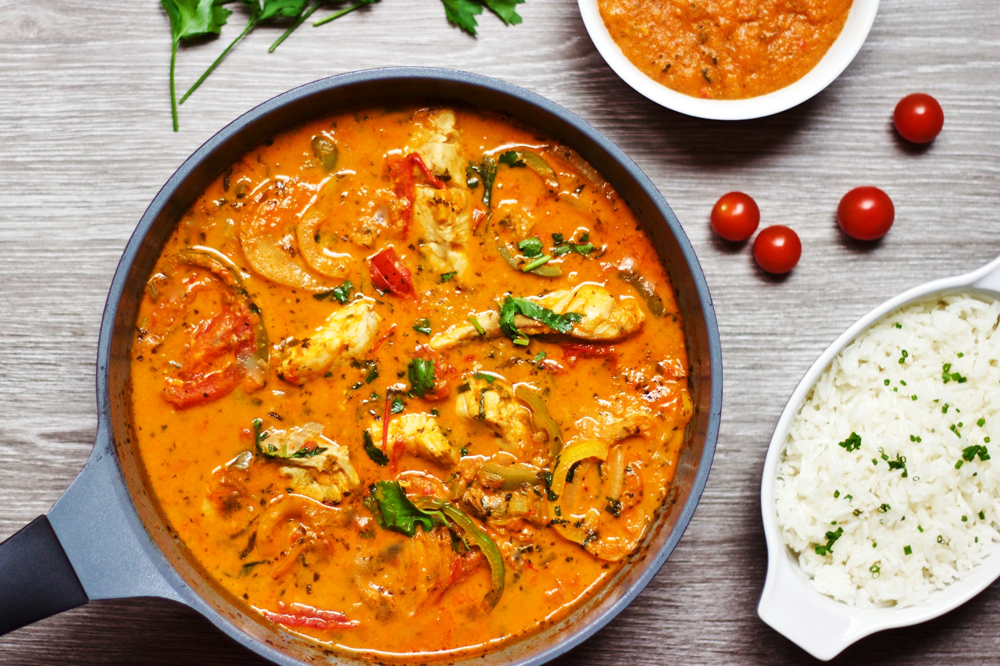

Moqueca Baiana (Brazilian Seafood Stew)
Moqueca hails from the state of Bahia in northeastern Brazil, the heart of Afro-Brazilian culture and its rich culinary heritage. Built on the freshest seafood you can find, moqueca delivers a creamy, spicy richness with just a few central ingredients. At the dish's base is sautéed garlic, onion, tomatoes and sweet peppers, and a fresh chilly adds heat that will linger gently. Coconut milk gives the stew body, and last but not least, red palm oil (azeite de dendê in Portuguese) acts as the glue that holds it all together.
INGREDIENTS
Yield: 4 to 6 servings
- 6 head-on prawns or large head-on shrimp
- 12 ounces cod fillet, cut into 1-inch piecesKosher salt
- 2 limes
- 3 tablespoons dendê oil (red palm oil)
- 4 garlic cloves, minced
- 1 small yellow onion, chopped (1 cup)
- 8 ounces sweet baby bell peppers or 2 bell peppers, any color, sliced into ¼-inch strips (2 cups)
- 1 pound fresh tomatoes, cut in 1-inch-wide wedges (2½ cups)
- 1 whole hot chile, such as red Scotch bonnet or bird's-eye, pierced all over with the tip of a knife
- 1 (13.5-ounce) can full-fat coconut milk
- ¼ cup chopped fresh cilantro
- Steamed rice, for serving
PREPARATION
Step 1
Use a pair of kitchen scissors to cut along the length of each prawn deep enough to expose and remove the vein. Place the fish chunks in a large bowl and season with 1 teaspoon salt. Squeeze in the juice of 1 lime and toss to coat. Set the prawns and fish aside while preparing the sauce.
Step 2
In a large, shallow Dutch oven or large, deep skillet, melt 2 tablespoons dendê oil over medium heat. Add the garlic and cook, stirring, until softened and fragrant, 1 minute. Add the onion, stir and cook, stirring until translucent, about 2 minutes.
Step 3
Increase the heat to high, add the peppers, tomatoes and chile. Season with salt. Cook, stirring frequently, until the peppers are softened and any liquid from the tomatoes is beginning to evaporate, 4 minutes.
Step 4
Pour in the coconut milk, stir and reduce the heat to medium. Simmer, stirring occasionally, until the liquid thickens and reduces to a creamy sauce, about 10 minutes. Taste, adjust the salt, if necessary, and stir in 2 tablespoons chopped cilantro.
Step 5
Carefully place the prawns in the sauce in a single layer and cook for 2 minutes. Turn the prawns to cook the other sides and add the cod. (Discard any juices in the bowl.) The fish will be partly submerged. Cook until the fish is tender and just cooked through, 2 to 3 minutes.
Step 6
Remove from heat, drizzle in the remaining 1 tablespoon dendê oil and sprinkle with the remaining 2 tablespoons chopped cilantro. Slice the remaining lime into wedges. Serve immediately, with steamed rice and lime wedges for squeezing.
TIP Dendê oil, also known as red palm oil, is available online or at West African or Caribbean markets.
Return to home